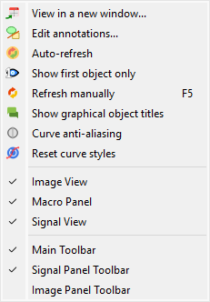
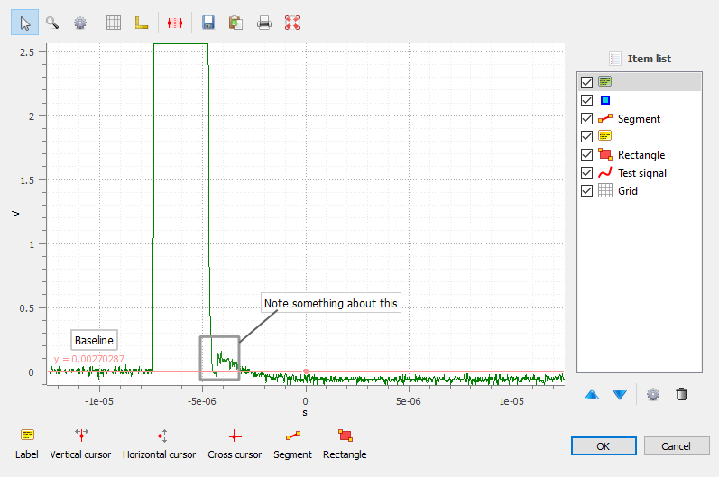
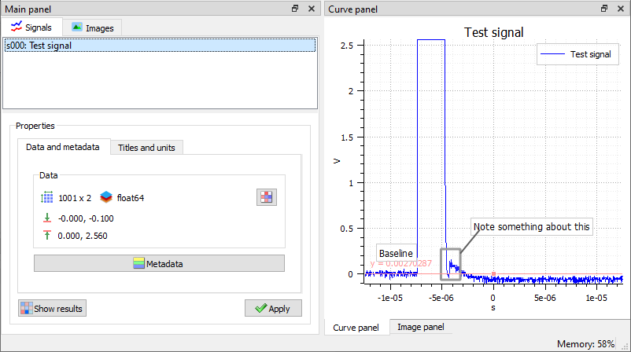

Options d’affichage pour les signaux#

Capture d’écran du menu « Affichage ».#
Lorsque le « Panneau Signal » est sélectionné, les menus et barres d’outils sont mis à jour pour fournir les actions liées aux signaux.
Le menu « Affichage » permet de visualiser le signal ou le groupe de signaux courant. Il permet également d’afficher/cacher les titres, d’activer/désactiver l’anticrénelage, ou encore de rafraîchir la visualisation.
Voir dans une nouvelle fenêtre#
Ouvre une nouvelle fenêtre pour visualiser les signaux sélectionnés.
Cette option vous permet de visualiser les signaux sélectionnés dans une fenêtre séparée, dans laquelle vous pouvez visualiser les données plus confortablement (par exemple, en maximisant la fenêtre) et vous pouvez également annoter les données.
Lorsque vous cliquez sur le bouton « Annotations » dans la barre d’outils de la nouvelle fenêtre, le mode d’édition des annotations est activé (voir la section « Modifier les annotations » ci-dessous).
Modifier les annotations#
Ouvre une nouvelle fenêtre pour modifier les annotations.
Cette option vous permet d’afficher les signaux sélectionnés dans une fenêtre séparée, dans laquelle vous pouvez visualiser les données plus confortablement (par exemple, en maximisant la fenêtre) et ajouter ou modifier des annotations.
Les annotations sont utilisées pour ajouter des commentaires ou des étiquettes aux données, et elles peuvent être utilisées pour mettre en évidence des événements spécifiques ou des régions d’intérêt.
Note
Les annotations sont enregistrées dans les métadonnées du signal, elles sont donc persistantes et seront affichées chaque fois que vous visualiserez le signal.

Les annotations peuvent être ajoutées dans la vue séparée.#
Le mode opératoire typique pour modifier les annotations est le suivant :
Sélectionnez l’option « Modifier les annotations ».
Dans la nouvelle fenêtre, ajoutez des annotations en cliquant sur les boutons correspondants en bas de la fenêtre.
Personnalisez les annotations en modifiant leurs propriétés (par exemple, le texte, la couleur, la position, etc.) en utilisant l’option « Paramètres » dans le menu contextuel des annotations.
Quand vous avez terminé, cliquez sur le bouton « OK » pour enregistrer les annotations. Cela fermera la fenêtre et les annotations seront enregistrées dans les métadonnées du signal et seront affichées dans la fenêtre principale.

Les annotations font désormais partie des métadonnées du signal.#
Note
Les annotations peuvent être copiées d’un signal à un autre en utilisant les fonctionnalités « copier/coller les métadonnées ».
Rafraîchissement automatique#
Rafraîchit automatiquement la visualisation quand les données changent.
Si activé (par défaut), la visualisation est automatiquement rafraîchie quand les données changent.
Si désactivé, la visualisation n’est pas rafraîchie tant que vous ne cliquez pas sur le bouton « Rafraîchir manuellement » dans la barre d’outils.
Même si l’algorithme de rafraîchissement est optimisé, il peut prendre du temps pour rafraîchir la visualisation quand les données changent, surtout quand le jeu de données est grand. Par conséquent, vous pouvez désactiver le rafraîchissement automatique quand vous travaillez avec des données volumineuses, et l’activer à nouveau quand vous avez terminé. Cela évitera des rafraîchissements inutiles.
Afficher seulement le premier signal sélectionné#
Basculer entre l’affichage de tous les signaux sélectionnés ou seulement du premier.
Lorsque cette option est activée, seul le premier signal sélectionné est affiché dans la vue du graphique. Cela peut être utile lorsque plusieurs signaux sont sélectionnés et qu’il est (temporairement) préférable de se concentrer sur un seul signal.
Rafraîchir manuellement#
Rafraîchir la visualisation manuellement.
Cela déclenche un rafraîchissement de la visualisation. C’est utile quand le rafraîchissement automatique est désactivé, ou quand vous voulez forcer un rafraîchissement de la visualisation.
Afficher les titres des objets graphiques#
Affiche/cache les titres des objets graphiques liés aux résultats d’analyse et aux annotations.
Cette option vous permet d’afficher ou de masquer les titres des objets graphiques (par exemple, les titres des résultats d’analyse ou des annotations). Masquer les titres peut être utile lorsque vous voulez visualiser les données sans être perturbé, ou s’il y a trop de titres et qu’ils se chevauchent.
Anticrénelage des courbes#
Active/désactive l’anticrénelage sur les courbes.
L’anticrénelage rend les courbes plus lisses, mais peut aussi les rendre moins nettes.
Note
L’anticrénelage est activé par défaut.
Avertissement
L’anticrénelage peut ralentir significativement l’affichage, surtout quand on travaille avec des données volumineuses.
Réinitialiser les styles de courbes#
Réinitialise le style de courbe au début du cycle.
Lors de l’affichage de courbes, DataLab attribue automatiquement une couleur et un style de ligne à chaque courbe. Les deux paramètres sont choisis dans une liste prédéfinie de couleurs et de styles de ligne, et sont attribués de manière cyclique.
Cette entrée de menu permet de réinitialiser les styles de courbes, de sorte que la prochaine fois que vous afficherez des courbes, la première courbe sera attribuée la première couleur et le premier style de ligne de la liste prédéfinie, et la boucle recommencera à partir de là.